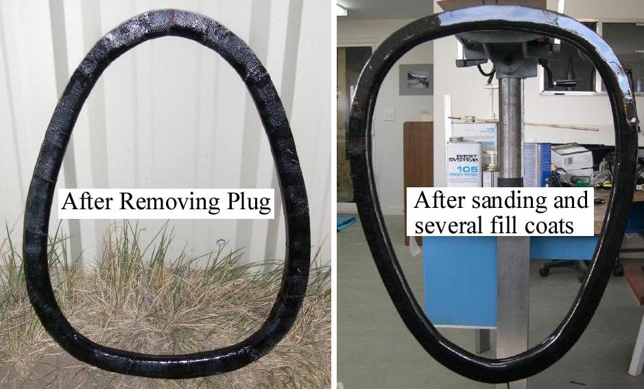

| Fiberglass Coaming (2 of 4) | Menu Previous Page Next Page |
|
 After trimming (Dremel Tool) the excess material using the plug outside edge as a guide, remove the plates connecting the two plug sections, and remove the plug. Wet sand the coaming to remove all high spots from the overlap of the fiberglass. Fill the weave with additional coats of epoxy resin/graphite powder and wet sand between coats. |
|